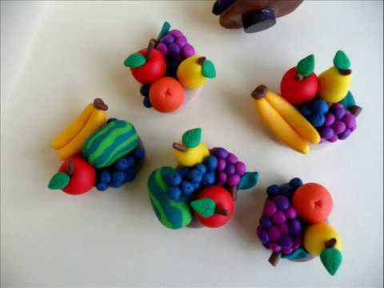

<div class="container">
  <div id="page1">
    <h2>Poterie en pâte à modeler</h2>
    <p>
      Travaille ta pâte à modeler avec tes mains pour créer un village gaulois.
    </p>
    
    <p>
      Tu pourras ensuite aller à la page suivante pour nous en envoyer une
      photo.
    </p>
  </div>
</div>
